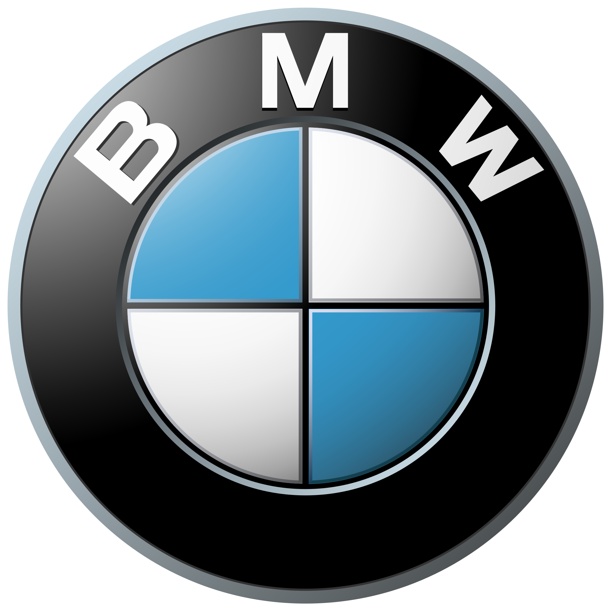

M
THE MOST POWERFUL LETTER IN THE WORLD.
Packed with power normally reserved for the track, M generates performance unlike anything else. And after four decades of delivering hair-raising thrills, it’s still pushing the limits. But don’t just take our word for it. Grip the wheel of any of our eight M models—from coupes to convertibles to Sports Activity Vehicles® – and elevate your adrenaline rushes to a whole new level.
DYNAMIC ENGINEERING
BUILT FOR WHITE-KNUCKLE THRILLS.
At the heart of every M is advanced BMW engineering. Intelligent lightweight materials—including Carbon Fiber—reduce weight for optimum agility. State-of-the-art TwinTurbo technology also ensures a lighter body by decreasing the number of cylinders, while still delivering greater than 100 horsepower per liter.1
AGGRESSIVELY POWERFUL
YES, IT'S STREET LEGAL.
Meet the race car you can drive every day. Its blistering power is matched with responsible handling to deliver track- level performance that you can measure with unique tools like the M Laptimer app with GoPro integration. This tool analyzes your driving style on closed courses and is designed to help improve your lap times.
PERFORMANCE HISTORY
WHERE POWER WAS BORN.
It all started on the track in 1972. What began as a division for BMW’s racing teams quickly grew to become an incredible passion for many BMW enthusiasts. Its on-track success spurred the world’s most coveted high-performance vehicles: the original M1, the iconic E30 M3, and most recently, the intensely thrilling M2.
*Disclaimer all the content on this page is taken from BMW USA